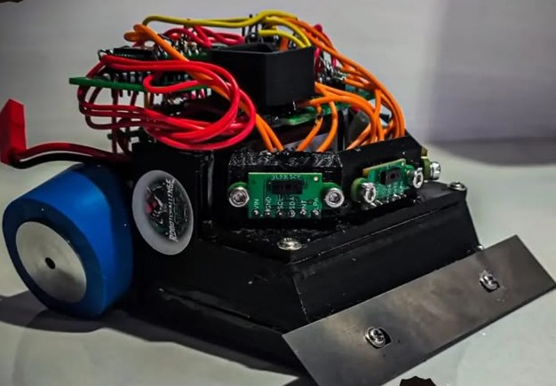
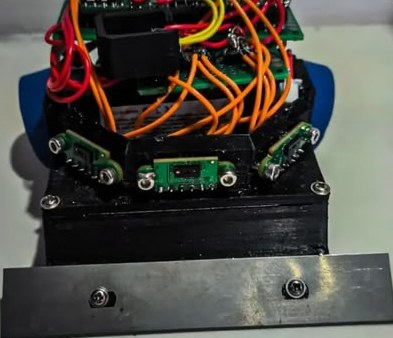
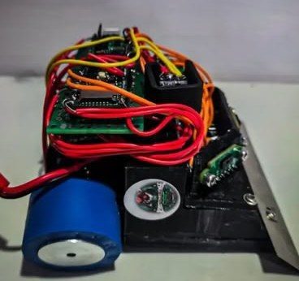

Modelo aproximado del mini sumo con el que competimos en RobotChallenge 2026 y simulación de sus tres sensores VL53L5CX. Arrastra al oponente y mira cómo cambian las matrices.
Cada VL53L5CX mide la distancia en una cuadrícula de 4×4 u 8×8 zonas dentro de un campo de 45° × 45°. En el modelo, con uno al frente y dos en diagonal, los tres campos cubren cerca de 117° al frente.
Las filas de abajo siempre ven el dohyo. Por eso la simulación compara cada zona con la distancia al piso que mediría con el dohyo vacío: si mide bastante menos, ahí hay un objeto. Con las zonas marcadas de los tres sensores calcula el rumbo y la distancia al oponente.
En el robot real, la Teensy 4.1 lee los tres sensores por I²C.


